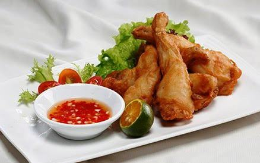

Cùng bắt tay làm thử thôi nào!
- Thịt đùi ếch : 0,5 kg chọn loại đùi to đều thịt hồng hào và chắc
- Bơ : hộp nhỏ 50g
- Tỏi xay : 2 thìa chọn loại tỏi ta nhánh nhỏ là thơm ngon nhất
- Bột năng, mì chính, hạt nêm, hạt tiêu xay, dầu ăn. trứng gà.
- Đùi ếch đem rửa sạch để ráo nước, sau đó ướp thịt đùi ếch với hạt nêm, hạt tiêu xay trong khoảng 15-20 phút cho ngấm gia vị
- Trứng gà đập ra bát to sau đó dùng đũa đánh thật tan. Tiến hành nhúng đùi ếch đã tẩm ướp gia vị qua trứng gà sau đó lăn đều qua bột năng. Lăn cho hết tất cả số đùi ếch, chú ý lăn đều 1 lượt không quá mỏng và không quá dày.
- Cho dầu vào chảo đun nóng lên sau đó cho đùi ếch vào chiên chín vàng đều sau đó vớt ra.
- Cho bơ và tỏi vào chảo đã rửa sạch sau đó phi cho tỏi xay thật thơm lên. Tiến hành cho đùi ếch vào xóc thật đều để đùi ếch bám đều bơ và tỏi. Tiến hành trút ra đĩa là có thể ăn được ngay.
- Món ăn được ăn ngya lúc nóng là ngon nhất. Khi ăn ăn cùng với rau xà lách, cà chua tươi và được chấm với nước mắm chanh ớt, muối chanh ớt hoặc ai thích có thể chấm tương ớt hoặc tương xí muội.
- Yêu cầu món ăn : Thịt ếch chín thơm và ngon không bị khô có vị vừa miệng ăn, khi ăn thơm mùi bơ tỏi.
- Vừa rồi chúng tôi đã hướng dẫn quý vị thực hiện món Ếch chiên bơ tỏi, chúc quý vị thực hiện thành công món ăn này.